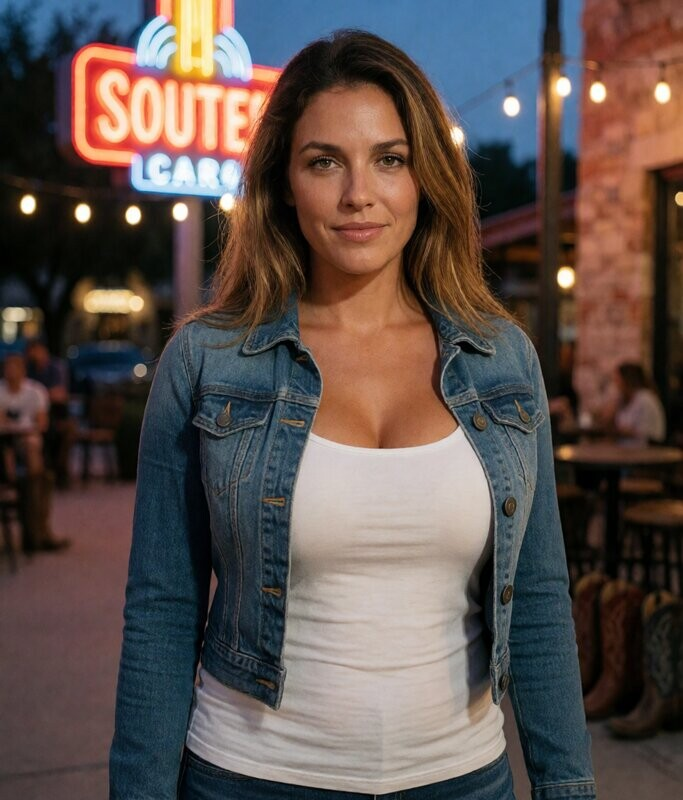
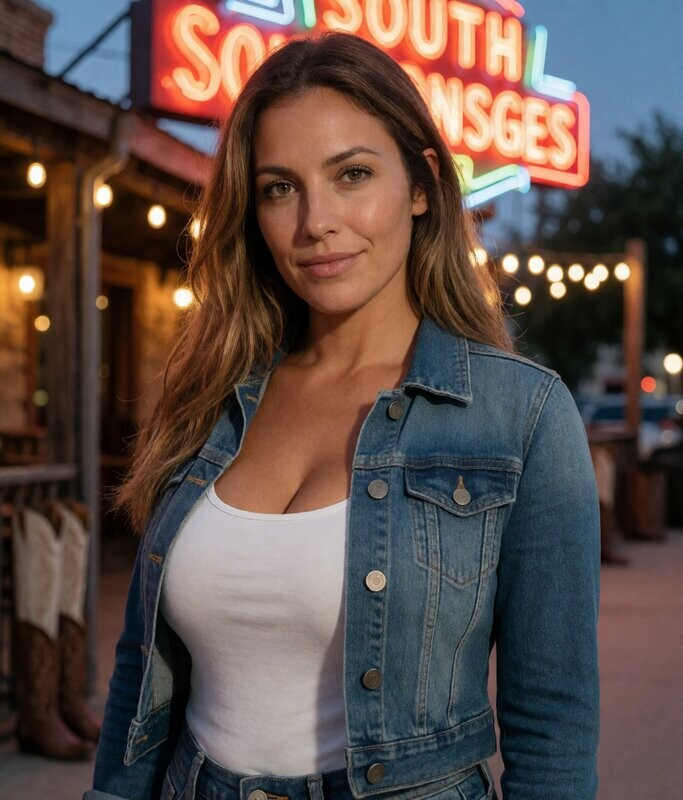
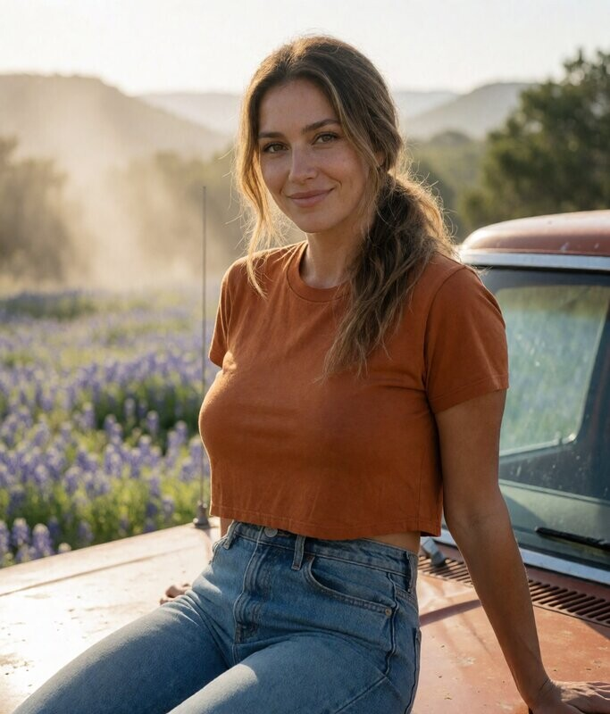
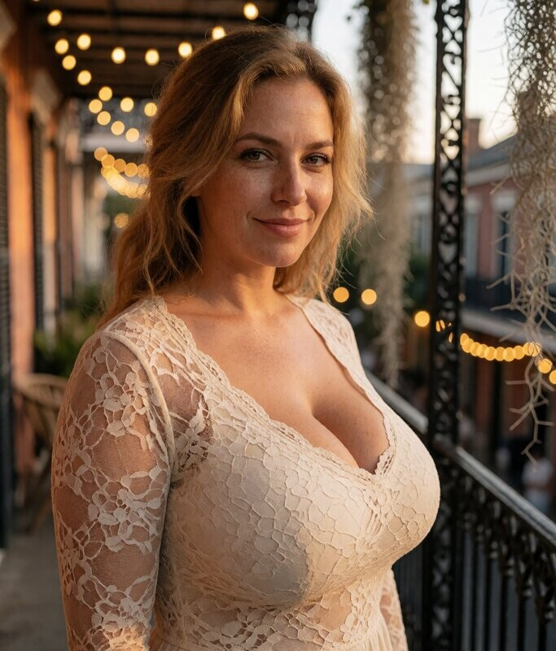
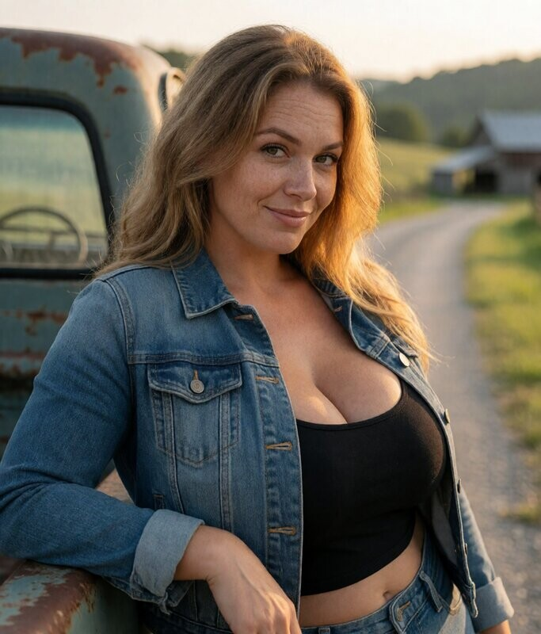

Maeve, Dallas, Delilah — New York, Austin, Savannah
Cheveux auburn bouclés, peau claire avec freckles, yeux verts. SoHo, West Village rooftop, Central Park en automne, l'énergie irlandaise-américaine.
Cheveux miel-brun, yeux noisette, peau claire avec tan chaud. South Congress au dusk, hill country, boots et néon, l'âme texane.



Cheveux miel-blond, yeux noisette, peau claire avec freckles. Balcon en fer forgé, Spanish moss, camion rural, l'âme du Sud.

